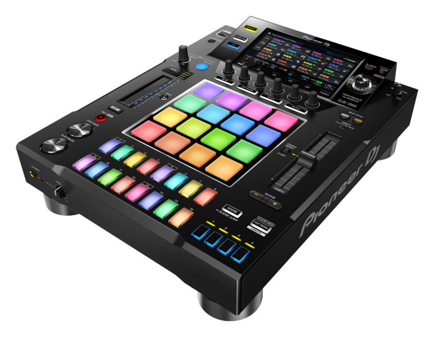

Reggaetón es un estilo de música bailable urbana y latina que mezcla el reggae con el hip hop con letras en español mezclado con ritmos latinos como la bomba y la salsa. El reggaetón se populariza en los años ‘90 cuando se comienza a comercializar masivamente con artistas puertorriqueños. Es por ello que se le atribuye el origen del reggaetón a Puerto Rico cuyos más conocidos exponentes son, por ejmplo, Daddy Yankee, Don Omar, Tego Calderón, Wisin & Yandel entre otros.

En un principio, el género fue una variante del reggae y el rap en castellano a la que se le agregó el dem bow, el característico ritmo repetitivo y casi hipnótico que conforma la base del reggaetón.
El reggaetón se caracteriza por su contenido explícito, lascivo y sexual que se manifiesta en el movimiento de baile típico del reggaetón llamado “perreo” que viene de perro ya que la posición adoptada se asemeja a la de un perro y evoca posiciones sexuales. El público principal del reggaetón son adolescentes y deriva de aquellos que siguen el rap y el hip hop. Cuando el reggaetón aparece en los inicios de los años ‘90 en Puerto Rico inicialmente lo llamaban under porque eran tocadas en clubes clandestinos. Por ello, se considera un estilo underground urbano ya que provocaba con letras, actitudes y ritmos explícitos fuera de la norma social considerada correcta.
Sintetizador, caja de ritmos, sampler, tornamesas, teclado electrónico, percusión
El reggaetón nació como un fenómeno underground de los barrios bajos de Puerto Rico y Panamá. Hasta que el verdadero furor surgió a partir del año 2000. Hubo canciones que se pusieron de moda de la noche a la mañana y el ritmo penetró los más diversos públicos, cautivando oídos y taladrando otros tantos.